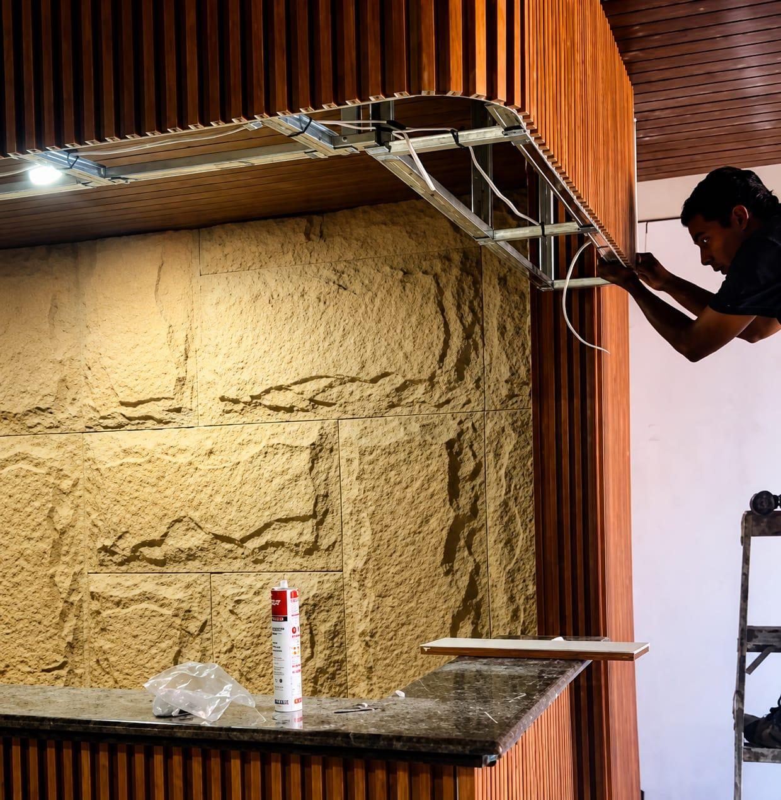
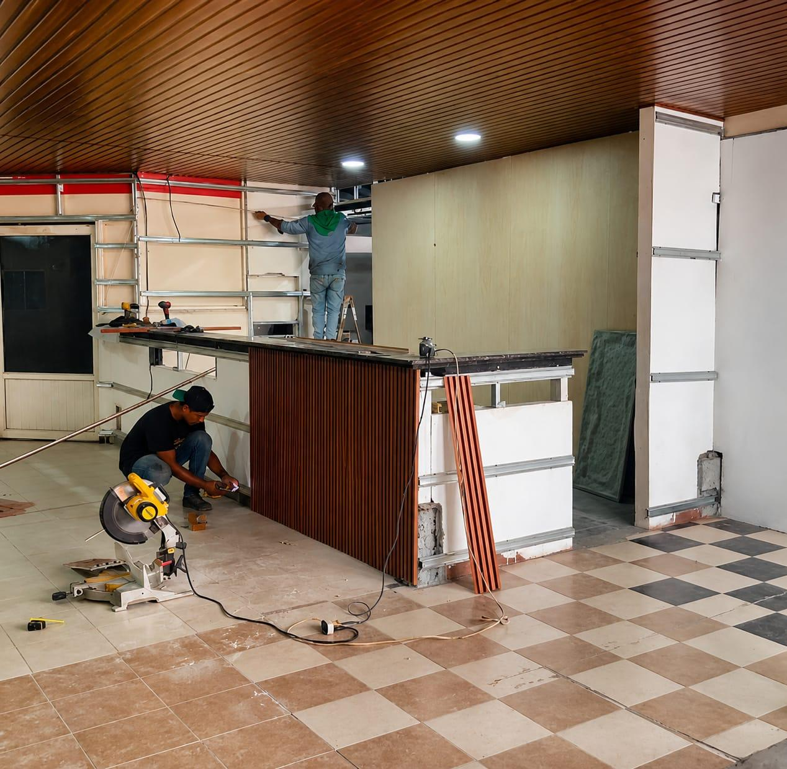
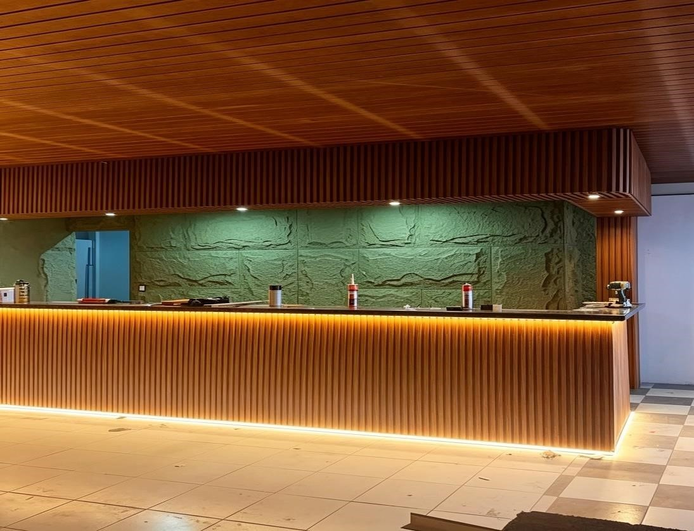
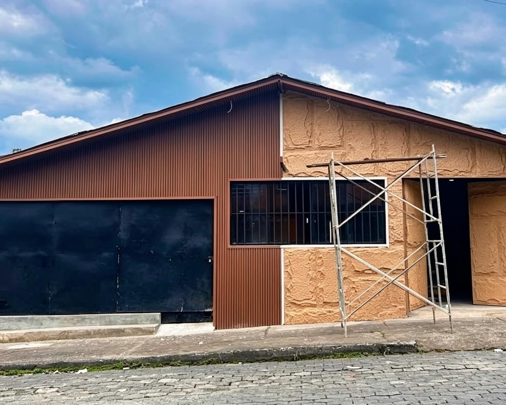
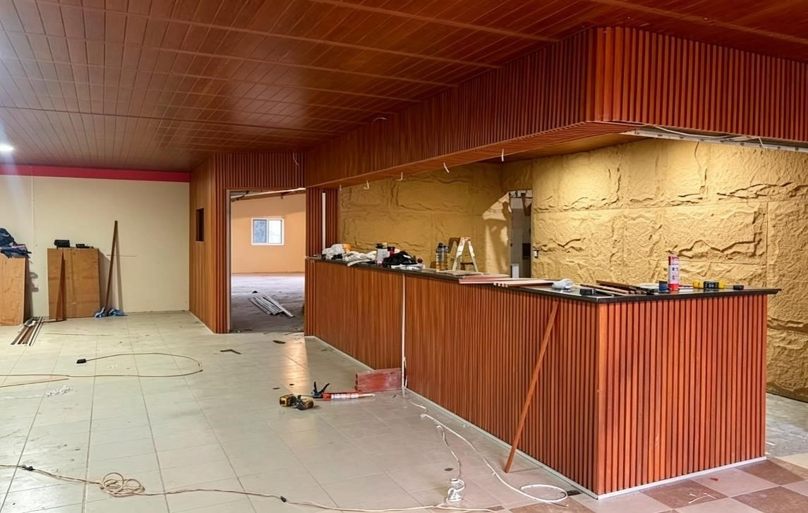

RESTAURANT TISHOS
DISEÑO + CONSTRUCCIÓN
Un espacio que transforma la experiencia.





Restaurant Tishos fue concebido como un espacio donde la arquitectura y la identidad del lugar trabajan en conjunto para crear una experiencia cálida y reconocible.
La intervención incorpora materiales, iluminación y elementos de diseño que aportan carácter al espacio, generando una atmósfera acogedora y contemporánea.
Un proyecto desarrollado desde el diseño hasta su construcción, dando forma a una nueva identidad para el restaurante.